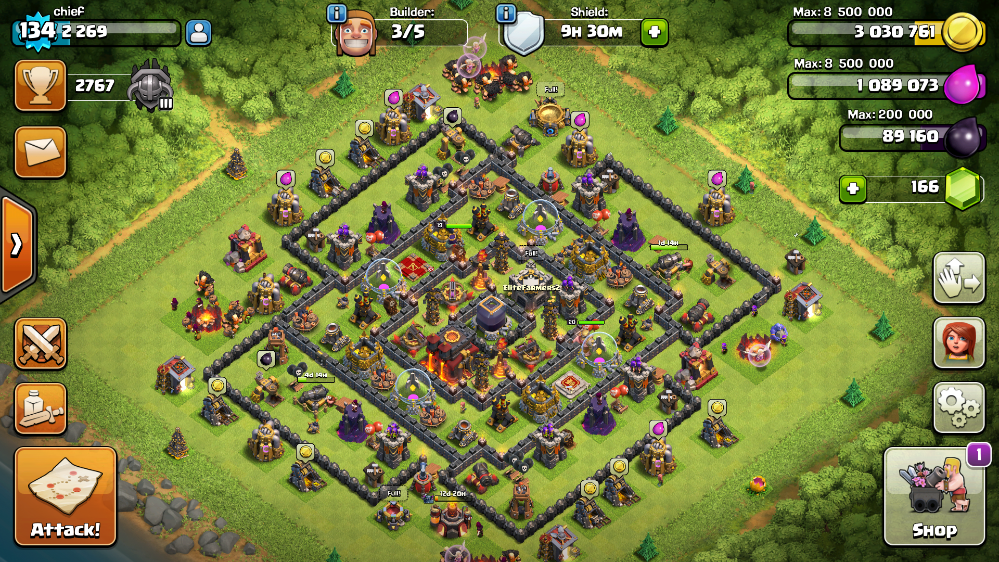

Farming is all about getting the most amount of resources in the least amount of time, you drop your trophies to get easier people to raid, and only attack those with a lot of resource.ssome of the townhall 9 war bases are given below
War base is a base that tries every means to prevent being 3 starred. It's like the ultimate trophy base that protects the Town Hall above all else.some of the townhall 9 war bases are given below